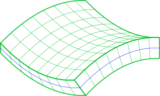
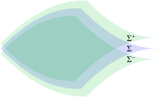
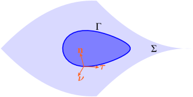
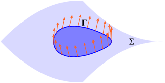
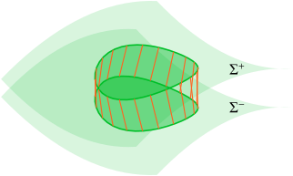
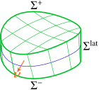
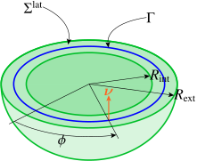

In the previous instalment of this series, we analysed a spherical pressure vessel by means of Koiter’s linear theory of thin shells. We found the somewhat unexpected result that the stress couple was not null. Besides, we also found that the stress resultant was slightly different from the well-known value \(N=pR/2\). So what was wrong with the previous analysis? To explore this question, we will make use of the exact solution in 3D elasticity.
The spherical pressure vessel, exact solution
Finding the stresses and displacements in a pressure vessel is a classical exercise in 3D linear elasticity. In this post, I will spare you the details of the derivation (which can be found in e.g. Timoshenko and Goodier, Theory of Elasticity, 2nd edition, McGraw-Hill, 1951 art. 121). Instead, I will come straight to the point, and provide you with the exact expression of the stress tensor in spherical coordinates (\(r\): distance to the center of the spherical pressure vessel) \[ \sigma_{rr}(r)=A-\frac{2B}{r^3}, \tag{1}\] \[ \sigma_{\theta\theta}(r)=\sigma_{\phi\phi}(r)=A+\frac{B}{r^3}, \tag{2}\] all other components being null. The integration constants \(A\) and \(B\) are defined below \[ A=-\frac{p_\text{ext}R_\text{ext}^3-p_\text{int}R_\text{int}^3}{R_\text{ext}^3-R_\text{int}^3}, \] \[ B=-\frac12\frac{\bigl(p_\text{ext}-p_\text{int}\bigr)R_\text{int}^3R_\text{ext}^3}{R_\text{ext}^3-R_\text{int}^3}, \] where \(R_\text{int}=R-h/2\) and \(R_\text{ext}=R+h/2\) denote the internal and external radii of the spherical pressure vessel (\(R\): radius of midsurface, \(h\): thickness); \(p_\text{int}\) and \(p_\text{ext}\) denote the internal and external pressures. To make a fair comparison between the shell theory and the 3D exact solution, it is customary to share the load equally between the upper and lower faces (see e.g. Reissner, 1947). In other words, \[ p_\text{int}=-p_\text{ext}=\frac p2. \]
In the remainder of this post, \(\sigma\) will denote the common value of the in-plane stresses \[ \sigma=\sigma_{\theta\theta}=\sigma_{\phi\phi}. \tag{3}\]
From Eq. (2), we readily find the following expressions of the stress resultant \(N=N_{\theta\theta}=N_{\phi\phi}\) and stress couple \(M=M_{\theta\theta}=M_{\phi\phi}\) \[ N=\int_{R_\text{int}}^{R_\text{ext}}\sigma(r)\,\mathrm{d}r=\frac{pR}2\frac{1+\frac{5h^2}{12R^2}}{1+\frac{h^2}{12R^2}}=\frac{pR}2\Bigl(1+\frac{h^2}{3R^2}\Bigr)+\mathcal O\Bigl(\frac{h^4}{R^4}\Bigr), \tag{4}\] \[ M=-\int_{R_\text{int}}^{R_\text{ext}}\bigl(r-R\bigr)\sigma(r)\,\mathrm{d}r=\frac{ph^2}{24}\frac{1-\frac{h^2}{4R^2}}{1+\frac{h^2}{12R^2}}=\frac{ph^2}{24}\Bigl(1-\frac{h^2}{3R^2}\Bigr)+\mathcal O\Bigl(\frac{h^6}{R^6}\Bigr). \tag{5}\]
Comparing with Koiter's solution, it is found that the dominant terms of the stress resultant coincide. This is not true of the stress couple, though. Even worse, the signs differ! While in Koiter’s solution, the stress couple is negative (as expected), integration of the 3D solution leads to a positive stress couple, which is unphysical. Something nasty is definitely taking place, here!
In the next section, I will show that Eqs. (4) and (5) are in fact (poor) approximations of the true expression of the stress resultant and couple.
Stress resultants and stress couples: the correct definition
Stress resultants and stress couples are defined from the internal resultant forces and moments exerted on subdomains of the shell. In this section, I will show how such subsystems are constructed from a closed path drawn on the midsurface.

The story begins with a shell, seen as a continuum.

We will focus on the upper and lower faces of the shell, \(\Sigma^+\) and \(\Sigma^-\), as well as the base surface, \(\Sigma\). For homogeneous shells, the base surface usually coincides with the midsurface (in other words, it is equidistant to the upper and lower faces). This is not really required here, as we are only discussing equilibrium issues. However, for the sake of simplicity, we will just assume that the base surface is the midsurface.

To define a subregion of the shell, we first draw a closed path \(\Gamma\) on the base surface, and define the local basis \((\vec\tau, \vec n, \vec\nu)\) attached to this curve: \(\vec\tau\) is the unit tangent, \(\vec n\) is the unit normal to the base surface, and \(\vec\nu=\vec\tau\times\vec n\) is the unit in-plane normal to \(\Gamma\).

As the current point moves along this path, the normal to the base surface sweeps a new surface, which will be the lateral surface of the subregion. It should be noted that, by construction, the lateral surface is a ruled surface. The outer normal to this surface is constant, equal to \(\vec\nu\) along each of the generating lines.

The lateral surface intersects the upper and lower faces of the shell…

… thus defining the upper and lower boundaries of the subregion. That’s it! We have defined our subsystem!
Let us now compute the resultant force \(\boldsymbol{\mathcal R}\) and moment \(\boldsymbol{\mathcal M}\) exerted by the remainder of the shell on this subregion. By definition of the Cauchy stress tensor \(\boldsymbol{\sigma}\), we have \[ \boldsymbol{\mathcal R}=\int_{\mathbf x\in\Sigma^\mathrm{lat}}\boldsymbol\sigma\cdot\boldsymbol\nu\,\mathrm{d}\Sigma_{\mathbf x}^\mathrm{lat}, \tag{6}\] \[ \boldsymbol{\mathcal M}=\int_{\mathbf x\in\Sigma^\mathrm{lat}}\mathbf{x}\times\bigl(\boldsymbol\sigma\cdot\boldsymbol\nu\bigr)\mathrm{d}\Sigma_{\mathbf x}^\mathrm{lat}, \tag{7}\] where \(\mathbf x\) denotes the current point on the lateral surface. By definition, the membrane stress resultant \(\mathbf{N}\) (second order tensor), the shear stress resultant \(\vec Q\) (vector) and the stress couple \(\mathbf{M}\) (second order tensor) allow the reduction of the above surface integrals to contour integrals \[ \boldsymbol{\mathcal R}=\int_{\mathbf x\in\Gamma}\bigl[\mathbf N\cdot\boldsymbol\nu+\bigl(\mathbf Q\cdot\boldsymbol\nu\bigr)\mathbf n\bigr]\mathrm{d}s, \tag{8}\] \[ \boldsymbol{\mathcal M}=\int_{\mathbf x\in\Gamma}\mathbf x\times\bigl[\mathbf N\cdot\boldsymbol\nu+\bigl(\mathbf Q\cdot\boldsymbol\nu\bigr)\mathbf n\bigr]\mathrm{d}s-\int_{\mathbf x\in\Gamma}\mathbf n\times\bigl(\mathbf M\cdot\boldsymbol\nu\bigr)\mathrm ds. \tag{9}\]
This definition will be used in the next section to compute the stress resultant and couple in the spherical pressure vessel.
Stress resultant and couple in the spherical pressure vessel

In order to compute \(N\) and \(M\) from the stress distribution in the spherical pressure vessel, we consider a subdomain obtained by taking the equator as closed path \(\Gamma\). Then, the lateral surface \(\Sigma^\mathrm{lat}\) is an annulus, and the outer normal \(\boldsymbol\nu\) is constant, vertical. Points on the lateral surface are specified by their radial distance \(r\) and polar angle \(\phi\).
We first use Eq. (6) to compute the resultant internal force \(\boldsymbol{\mathcal R}\). The surface element \(\mathrm{d}\Sigma^\mathrm{lat}\) reads \[ \mathrm{d}\Sigma^\mathrm{lat}=r\,\mathrm{d}r\,\mathrm{d}\phi=\frac rR\,\mathrm{d}r\,\mathrm{d}s, \] where it is observed that \(\mathrm{d}s=R\mathrm{d}\phi\) (\(s\): arc-length measured on \(\Gamma\)). Furthermore, from Eq. (3), we have \(\boldsymbol\sigma\cdot\boldsymbol\nu=\sigma(r)\,\boldsymbol\nu\). Eq. (6) then reads \[ \boldsymbol{\mathcal R}=\int_\Gamma\Bigl[\int_{R_\mathrm{int}}^{R_\mathrm{ext}}\sigma(r)\,\frac rR\,\mathrm{d}r\Bigr]\boldsymbol\nu\,\mathrm{d}s, \tag{10}\] where we have used the fact that \(\boldsymbol\nu\) is constant along \(\Gamma\). Turning now to Eq. (8), and recalling that \(N_{\theta\theta}=N_{\phi\phi}=N\) and \(\mathbf Q=\mathbf 0\), we find \[ \boldsymbol{\mathcal R}=\int_{\Gamma}N\,\boldsymbol\nu\mathrm{d}s. \tag{11}\]
Upon identification of Eqs. (10) and (11), we finally find the following expression of the stress resultant \(N\) \[ N=\int_{R_\mathrm{int}}^{R_\mathrm{ext}}\sigma(r)\,{\color{red}\frac rR}\,\mathrm{d}r, \tag{12}\] while a similar calculation delivers the stress couple \(M\) \[ M=\int_{R_\mathrm{int}}^{R_\mathrm{ext}}-\bigl(r-R\bigr)\sigma(r)\,{\color{red}\frac rR}\,\mathrm{d}r. \tag{13}\]
Comparing Eqs. (12) and (13) with Eqs. (4) and (5), we observe that we forgot the Jacobian \(r/R\)! For thin shells, we have \(r\simeq R\) and this correction is usually neglected.
In the present case, using Eq. (2), we find \[ N=\frac{pR}2\bigl(1+\frac{h^2}{4R^2}\bigr), \tag{14}\] \[ M=-\frac{ph^2}{30}\,\frac{h^2}{R^2}+\mathcal O\bigl(\frac{h^6}{R^6}\bigr). \tag{15}\]
Comparing Eqs. (14) and (15) with Eqs. (4) and (5), we see that the results are dramatically different! Indeed, the stress couple has a different sign, and is two order of magnitude smaller (with respect to the thickness of the shell)! Clearly, the thin shell approximation is questionable in the present case.
Conclusion
In this post, we used the exact stress distribution within the spherical vessel to compute the stress resultant and stress couple. We showed that the thin shell approximation, which amounts to neglecting the jacobian in a surface integral, results in poor estimates in this case. Exact integration delivers much more convincing results. However, we still have not completely solved the problem. Indeed, comparing Eqs. (14) and (15) with Eqs. (17) and (18) in the previous instalment of this series, we still observe major differences: the two values of the stress couple have the same sign, but they differ by two orders of magnitude (with respect to the thickness of the shell).
In the next instalment of this series, we will go back to Koiter’s shell model and use constitutive equations for thick shells to finally resolve the apparent contradiction.
Figures in this post were generated with the nice PyX library.